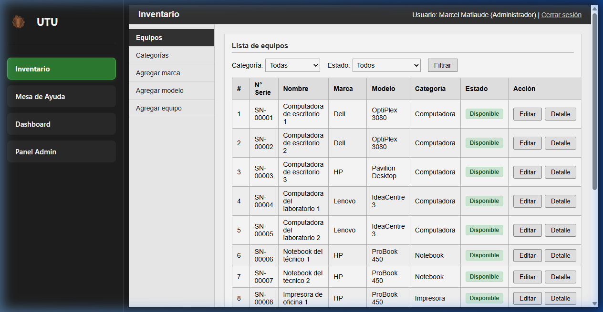
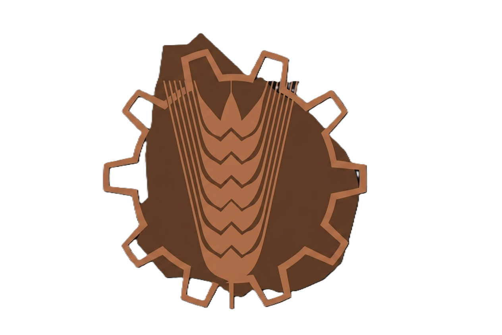
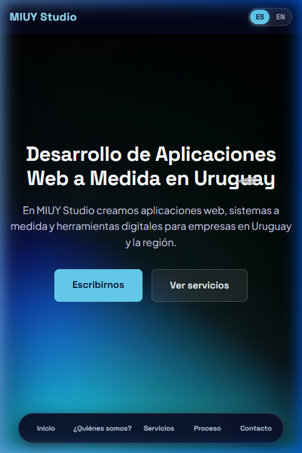
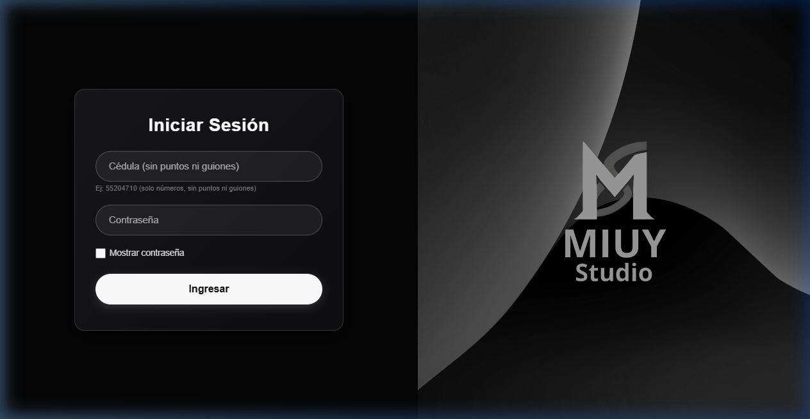
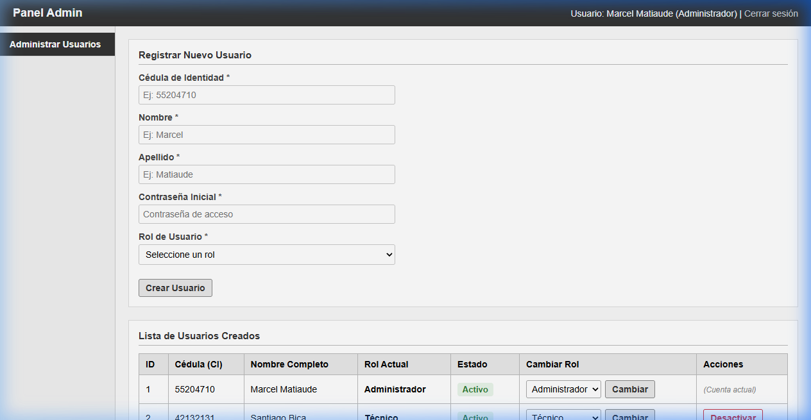
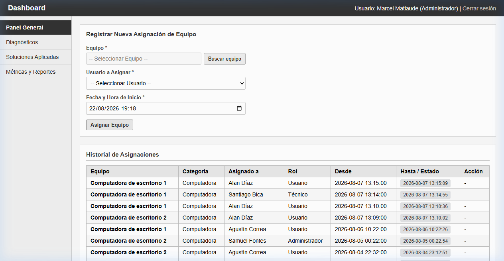

Portal de Gestión de Recursos & Soporte Informático
Plataforma web corporativa desarrollada para la Escuela Técnica de Florida para la administración de inventario, mesa de ayuda (Helpdesk), préstamos de hardware y analítica para la dirección.


UTU DGETP • Escuela Técnica de FloridaEquipo de Desarrollo & Distribución de Roles
Estructura de 6 expositores (~4 min por módulo) cubriendo el ciclo de vida completo del sistema.
El Problema Real & Diagnóstico en UTU
La gestión tradicional generaba pérdida de trazabilidad, ineficiencia y falta de control patrimonial.
Impacto Institucional
La falta de un sistema formal afectaba el normal desarrollo de clases y compras de hardware no fundamentadas.
La Propuesta: Portal de Gestión de UTU
Solución integral que centraliza el hardware, el soporte técnico y los reportes en una sola plataforma.
-
Inventario Centralizado: Altas, bajas, marcas, modelos y ficha técnica individual de cada activo.
-
Mesa de Ayuda (Helpdesk): Gestión ágil del ciclo de vida de tickets con niveles de urgencia.
-
Trazabilidad & Asignaciones: Registro nominal de custodias y préstamos a docentes y funcionarios.
-
Analítica para la Dirección: Métricas clave de rendimiento, fallas y tiempos medios de resolución.
Sitio Web Corporativo MIUY Studio
Portal institucional público desarrollado cumpliendo las pautas formales de evaluación.

Recorrido Visual Inicial & Navegación Fluida
Estructura unificada mediante visor iframe modular que proporciona una experiencia de usuario ágil tipo SPA.
-
Barra Lateral Unificada: Acceso permanente a Inventario, Mesa de Ayuda, Dashboard y Panel Admin.
-
Carga Asíncrona sin Recargas: Transiciones limpias entre módulos sin recargar la cabecera ni la sesión.
-
Adaptación Dinámica por Rol: El menú oculta o muestra accesos automáticamente según los permisos de sesión.
Acceso & Validación de Identidad por Cédula
Protocolo de inicio de sesión riguroso con validaciones numéricas y cifrado seguro.
-
Cédula de Identidad (CI): Identificador único del funcionario sin puntos ni guiones, validado con expresiones regulares.
-
Contraseña Cifrada con Hash: Almacenamiento seguro en la base de datos protegiendo las credenciales.
-
Persistencia de Sesión (
$_SESSION): Control en servidor deusuario_id,usuario_ciyusuario_rol. -
Control de Cuenta Activa: Restricción de acceso inmediata a usuarios con estado inactivo.

Sistema de Permisos & 3 Roles de Usuario
Gobernanza de accesos para asegurar la confidencialidad e integridad de la información institucional.
Panel Admin: Gestión de Usuarios
Módulo exclusivo del Administrador para el control de cuentas institucionales.
-
Alta de Nuevos Usuarios: Registro inmediato especificando Cédula, Nombre, Apellido, Contraseña y Rol inicial.
-
Cambio Dinámico de Rol: Modificación instantánea de privilegios (ej. ascender un usuario a Técnico o Admin).
-
Activación & Desactivación: Inhabilitación segura de cuentas con un solo clic, preservando el historial de auditoría.

Organización & Jerarquía de Hardware
Clasificación normalizada para catalogar todo el equipamiento tecnológico de la institución.
La selección de Categoría filtra dinámicamente las Marcas y Modelos asociados mediante JavaScript asíncrono, garantizando coherencia al registrar nuevo hardware.
Ciclo de Vida & 4 Estados del Hardware
Control estricto de transiciones físicas garantizado por el motor relacional de base de datos.
Búsqueda Rápida & Filtros Dinámicos
Localización inmediata de máquinas en tiempo real para auditorías y tareas de mantenimiento.
-
Número de Serie Alfanumérico: Búsqueda exacta por etiqueta del fabricante (ej.
SN-00001,OptiPlex 3080). -
Filtro Cruzado: Combinación instantánea de Categoría (Todas, Computadora, Notebook, Impresora) y Estado.
-
Acciones Rápidas: Botones de "Editar" y "Detalle" para ver la ficha completa del activo.

Ficha Técnica & Historial del Equipo
Expediente digital individual que consolida toda la vida útil de cada máquina.
Permite a la dirección de UTU y al equipo docente auditar en segundos cualquier equipo que presente fallas recurrentes.
Mesa de Ayuda: El Lado del Docente
Formulario intuitivo y rápido para que cualquier usuario reporte incidencias en segundos.
-
Título & Descripción Detallada: Explicación clara de la falla observada en el salón o laboratorio.
-
Selección del Equipo Afectado: Vinculación directa con el hardware o solicitud de servicio general.
-
Categoría del Requerimiento: Hardware, Software, Red / Internet, Impresión, Acceso / Contraseñas.
-
Nivel de Urgencia / Prioridad: Clasificación en Baja, Media o Alta para ordenar la atención.
El docente visualiza únicamente sus tickets creados con estado actualizado en tiempo real (Pendiente, En Proceso, Resuelto), sin llamadas ni papeles.
Bandeja Técnica & Gestión de Incidencias
Herramientas especializadas para el trabajo diario de los técnicos de soporte informático.

Flujo de Resolución en Vivo: Ciclo del Ticket
Transición formal del incidente: Pendiente → En Proceso → Resuelto con registro de solución.
"Impresora de Dirección no responde en red"
Asignado a: Sin técnico asignado | Equipo: IMP-KYOCERA-09
Módulo de Asignaciones & Préstamos de Equipos
Control patrimonial estricto para registrar la entrega y devolución de máquinas a docentes y funcionarios.
-
Asignación Nominal: Registro de entrega vinculando una máquina Disponible con la cédula del receptor.
-
Fecha de Entrega & Devolución:
fecha_inicioobligatoria yfecha_finpara registrar la devolución. -
Historial de Asignaciones: Tabla inmutable con registro cronológico de todas las custodias pasadas.

Dashboard de Métricas & Analítica Gerencial
Transformando datos operativos de tickets y activos en estadísticas clave para la dirección de UTU.
Ranking de incidencias acumuladas
Tiempo promedio de respuesta
Resolución promedio en SLA
Cero extravíos de hardware
Toma de Decisiones: ¿Qué Hardware Renovar?
Uso estratégico de la analítica para optimizar presupuestos y priorizar recambios.
COUNT(t.id_ticket) as total_fallas
FROM equipos e
JOIN tickets t ON e.id_equipo = t.id_equipo
GROUP BY e.id_equipo
ORDER BY total_fallas DESC LIMIT 5;
Base de Conocimiento: Diagnósticos & Soluciones
Registro de procedimientos exitosos para resolver incidencias recurrentes en minutos.
Si un técnico rota de horario o deja la institución, el conocimiento acumulado permanece 100% disponible en la plataforma.
Stack Tecnológico & Modelo MER de Base de Datos
Arquitectura modular relacional en MySQL con claves foráneas estrictas y consultas preparadas.
Desafíos Técnicos Superados en el Desarrollo
Soluciones de ingeniería implementadas ante la complejidad técnica del proyecto.
Bienvenido a la plataforma institucional centralizada
Resultados Obtenidos & Antes vs Ahora
Validación práctica y cumplimiento del 100% de los requerimientos fijados.
| Área | Antes (Sin Sistema) | Ahora (Con Portal UTU) |
|---|---|---|
| Inventario | Planillas Excel desincronizadas | Base de datos centralizada e inmutable |
| Trazabilidad | Pérdida de historial de equipos | 100% de préstamos auditados con fecha |
| Mesa de Ayuda | Pedidos verbales sin prioridad | Tickets formalizados con ciclo de vida |
| Decisiones | Estimaciones sin sustento | Dashboard analítico y KPIs en tiempo real |
El sistema se encuentra 100% operativo, probado y listo para su implantación institucional en centros educativos y empresas.
¡Muchas Gracias por su Atención!
Agradecemos a los profesores Luis Aguiar, Alejandro Silva y al cuerpo docente de la Escuela Técnica de Florida "Prof. Hermenegildo Sabat" por su orientación y acompañamiento.
Vista General de Diapositivas (24)
Haz clic en cualquier diapositiva para saltar a ella directamente.